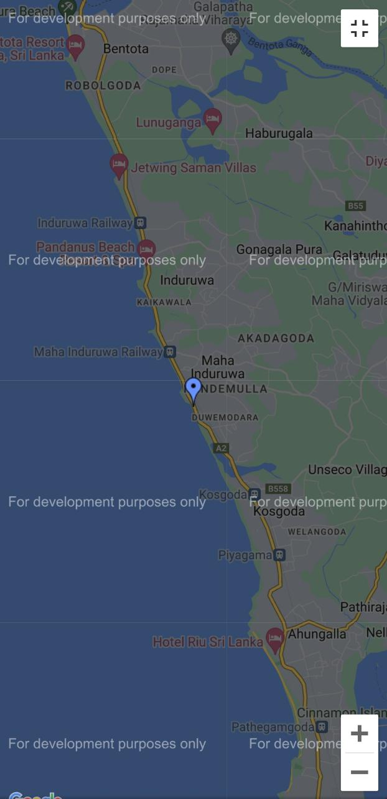
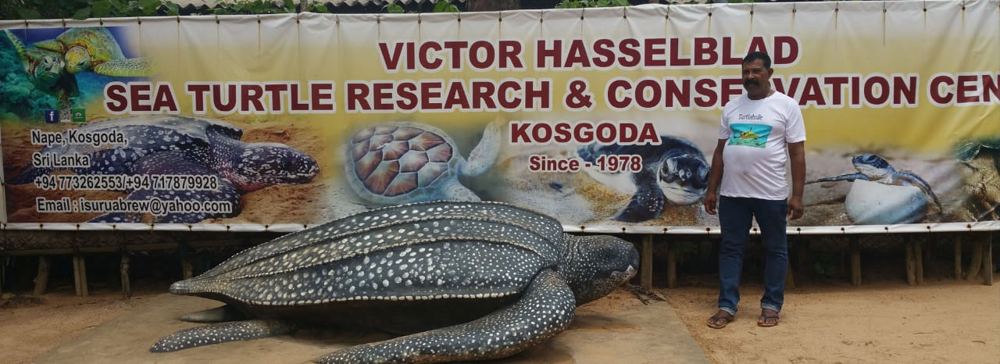

Distance (From Bentota Railway Station): 9 Kms
Trip Duration (Including Travel): 1 Hour
Place Location: At Kosgoda
Transportation Options: Bus / Cab / Auto
Travel Tips: None

At a distance of 9 km from Bentota Railway Station, Sea Turtle Hatchery is a turtle conservation center located along the coast of the Indian Ocean at Kosgoda. It is one of the must-visit places in Bentota during your Sri Lanka Tour.

The oldest turtle conservation projects in Sri Lanka. Kodgoda turtle hatchery is quite popular
for having all five turtle species seen on the country's beaches. Functioning as a hatchery,
Kosgoda projects envisage much more to preserve the turtle life on the shore. They run
various activities and volunteer programs for locals and international tourists to go through
and have a knowledge of processes of turtle hatching.
Kosgoda Turtle Hatchery houses 4 of all five turtle species in Sri Lanka including "white
turtle", the very rare species.
The Kosgoda Sea Turtle Conservation Project was started by Dudley Perera in the year 1981. The main aim of the project is to conserve the sea turtles and protect them from predators like birds, dogs, and crabs. It is one of the 18 hatcheries in Sri Lanka devoted to the proper breeding of this endangered species. Visitors can get to see up to five endangered species out of seven species of margin turtles in the world here. The place is especially suitable for kids but provides to be a once in a lifetime experience for all.